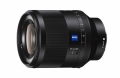

器材库 > 35mm画幅AF定焦镜头 > Planar T* FE 50/1.4 ZA

详细规格
镜头类型
标准镜头
发布日期
2016-07-12
焦距
50mm
最大光圈
f/1.4
最小光圈
f/16
视角（对角）
47°
镜头结构
12片/9组
非球面镜片
2片
低/超低色散镜片
1片
光圈叶片
11片
最近对焦距离
45cm
最大放大倍率
0.15x
驱动马达
SSM
滤镜口径
72mm
镜头卡口
Sony E
防抖
否
颜色
黑色
尺寸
83.5×108mm
重量
778g
菜鸟小黑2016-11-26 14:504.92 分
操作性 5.00耐用性 5.00性价比 4.50解像力 5.00色彩还原 5.00机械结构 5.00
liusm12342016-08-09 19:504.83 分
操作性 5.00耐用性 5.00性价比 4.50解像力 5.00色彩还原 5.00机械结构 4.50
产品图 / 样片
Planar T* FE 50/1.4 ZA
评测 / 相关文章
- 详细内容 （存档）
- 超高素质完美表现 索尼FE 50/1.4 ZA测评 （存档）
- ［试用］索尼Planar T* FE 50/1.4 ZA实拍样张 （存档）
- ［资讯］标头新高度 索尼Planar T* FE 50/1.4 ZA开箱 （存档）
- ［试用］极致画质初体验 试用蔡司50/1.4 （存档）
- ［资讯］蔡司FE50/1.4ZA中心可与Otus媲美 （存档）
- ［资讯］全幅微单镜头Planar T* FE 50/1.4 ZA发布 （存档）
相关文章
- ［资讯］DxO公布Plannar T* FE 50/1.4 ZA镜头成绩 （原站已下线）
- ［试用］FE50/1.4ZA与FE85/1.4GM怎么选 （存档）
- ［试用］带你领略索尼FE 50/1.4 ZA的魅力 （原站已下线）
- ［试用］数毛利器 索尼FE 50/1.4 ZA实拍体验 （原站已下线）
- ［试用］标定艺术范儿 索尼FE 50/1.4 ZA试拍 （原站已下线）
- ［试用］索尼Planar T* FE 50/1.4 ZA实拍样张 （存档）
- ［试用］超高素质完美表现 索尼FE 50/1.4 ZA测评 （存档）
- ［资讯］标头新高度 索尼Planar T* FE 50/1.4 ZA开箱 （存档）
- ［试用］极致画质初体验 试用蔡司50/1.4 （存档）
- ［资讯］蔡司FE50/1.4ZA中心可与Otus媲美 （存档）
- ［资讯］叫板Outs 索尼发布Planar T* FE 50/1.4镜头 （存档）
- ［资讯］全幅微单镜头Planar T* FE 50/1.4 ZA发布 （存档）